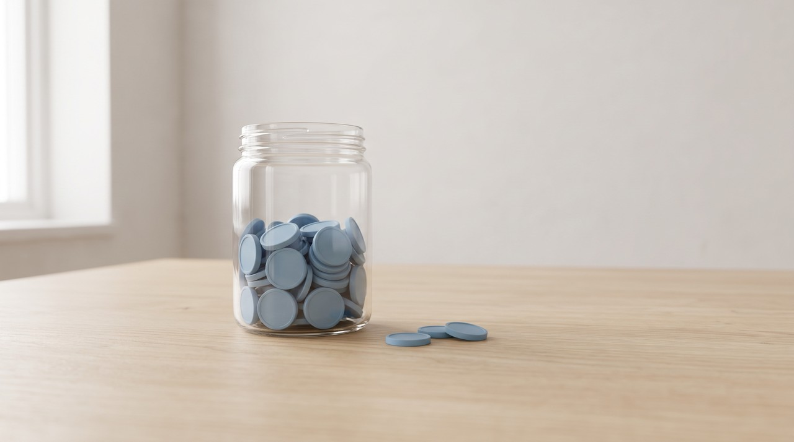
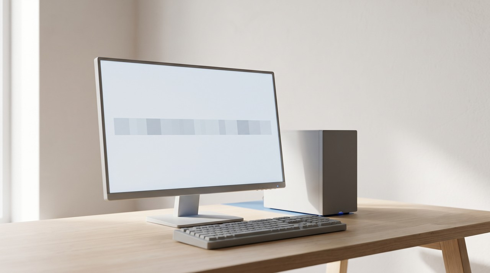

An Opus Clip alternative that runs on your own PC
If you are looking for an Opus Clip alternative that runs locally on your PC, you really have two options: a desktop app, or an open source project you host yourself. The Video to shorts tab inside VideoDoc is the desktop option. It handles everything right on your machine by finding the best moments, framing them vertically, and adding captions, with no upload and no monthly credits. Still, OpusClip remains the better choice if you want automated posting and scheduling built into the tool.
You already like the basic concept of OpusClip, where you drop in a long video and get short clips back. Yet something about the setup probably makes you hesitate, and the common searches people type next to its name show why: free, no watermark, open source, local. The real question is whether you can get that same result on your own hardware, without uploading a massive file or paying a recurring monthly bill.
I want to be upfront about my perspective before going any further. Since I am the developer behind VideoDoc, I am a direct competitor, and I did not test OpusClip specifically for this comparison. Everything I share about their service comes straight from their own pricing and help pages, which I checked on 18 November 2026 and linked below. If their setup already works well for your needs, you should stick with it.
What does OpusClip give you, and what does it cost?
OpusClip operates as a web service, meaning you upload your video so their cloud servers can process it. Their pricing page outlines a Free plan with 60 credits a month, a Starter plan at $15 a month with 150 credits, and a Pro plan at $29 a month, which drops to $14.50 a month if billed yearly. According to their help page on credits, processing consumes 1 credit for every minute of your original video, so a 30 minute file takes 30 credits.
Consider what that credit math looks like when you work with longer recordings. A 3 hour stream equals 180 minutes, meaning it requires 180 credits, which is more than a single month on the Starter plan provides. You can bring that number down, since that same help page notes you can select just a portion of the video to process. If you are on the Free plan, the page also notes three restrictions: your clips get a watermark, you cannot edit them, and you lose the ability to export them after 3 days.

Who should stay with OpusClip?
Those paid plans do include several features my app does not offer at all, such as automatic posting to YouTube Shorts, TikTok and Instagram Reels, a social media scheduler, a team workspace, AI B-roll, video dubbing, and clips up to 15 minutes long. Using a web service also makes sense if your computer is older, or if you work from a phone or a Chromebook, because their servers take on all the heavy processing. If you post for several accounts every day and want one place to clip and schedule, stay with OpusClip.
What runs on your own PC instead?
VideoDoc is a compact desktop application built for Windows and for Apple Silicon Macs running macOS 14 or newer. Inside the Video to shorts tab, you can drop in a local file, enter a file path, or paste a public link. The software then analyzes the entire video on your machine, logging the timing of every word, spotting scene cuts and faces, and tracking volume peaks. Based on those signals, it recommends the strongest moments in four different durations, up to 3 minutes each, giving every suggestion a score of 1 to 5 dots alongside a brief, plain explanation.
You have a few ways to handle the framing: it can track the speaker's face, keep the full picture visible, place a facecam on top, or stay locked wherever you drag it. Word by word captions are enabled right out of the box. While the standard export is a vertical 1080x1920 video, you can also choose square, 4:5 or keep the original aspect ratio.
Since all of this processing runs locally on your own computer, there are no credits to track. I do not maintain any servers to process your files, which is why I can offer Pro as a one time purchase instead of a monthly subscription. The video itself is not uploaded. The app does go online for a few small tasks: checking your licence, looking for software updates, completing a one time download of the speech engine (around 486 MB for the Balanced option), and downloading the video if you paste a link.

| OpusClip | VideoDoc | |
|---|---|---|
| Where the work happens | On OpusClip's servers, after you upload | On your own computer |
| Free plan | 60 credits a month, clips have a watermark, no editing, export within 3 days | Lite: videos up to 20 minutes each, a small "Made with VideoDoc" mark |
| Paid plan | Starter at $15 a month: 150 credits, watermark removed | Pro, a one time payment: no length limit, no mark |
| Posting to social apps | Built in on the paid plans | Not included, you upload the files yourself |
| Longest clip | Up to 15 minutes | Up to 3 minutes |
Is either one free with no watermark?
No, and I would rather be honest about that right now than have you find out after installing the software. Just as OpusClip's Free plan adds a watermark to your clips, VideoDoc Lite stamps a small "Made with VideoDoc" mark onto every export. Upgrading removes that mark, whether you pay monthly for OpusClip's Starter plan or pay once for VideoDoc Pro. Lite is free, but it is not free of a mark. Even so, it gives you a fair way to test the entire workflow on a video of 20 minutes or less before spending any money.
What are the free and open source routes, and where do they stop?
The plain free route is to do the editing yourself. You can load your recording into a free editor like CapCut or a mobile editing app, crop the widescreen frame to vertical, and switch on auto captions. This costs nothing, though nothing marks the good moments for you, so you will spend your evening scrubbing through a long timeline manually.
For anyone specifically searching for open source software, I looked at two GitHub projects today. SupoClip is presented as an open source tool that generates vertical clips with subtitles, and its page says you can self host it for noncommercial use, while commercial projects require written permission from the company behind it. ClippyMe is described as a self hosted web application that slices long videos into 9:16 captioned clips. Its repository notes that it uses Google Gemini to select and rank the clips, and since Gemini is a cloud model, that part of the process is not offline.
Because I have not installed either project myself, I cannot speak to how smoothly they run in practice. What I can point out is that self hosted software requires you to handle the initial setup and ongoing updates on your own. That is fine if you enjoy that kind of work, but it feels like a lot of overhead if you just want to cut three clips tonight.
Whose videos can you clip?
No matter which tool you pick, the copyright rules remain the same. Only clip your own recordings, or someone else's material if you have their written permission. Even then, permission only gets you so far, because YouTube's channel monetization policies explicitly state regarding reused content: "This policy applies even if you have permission from the original creator." Getting a yes from the creator makes the clip allowed, but qualifying for ad revenue requires adding your own commentary or original story, and captions alone do not count.
It is important to be clear about what VideoDoc cannot do: it will not post or schedule your clips, and it lacks AI B-roll, dubbing and team collaboration tools. Because it selects highlights based purely on words, audio levels and visual changes without understanding the actual subject matter, you should always review every suggestion before exporting. Individual shorts are capped at 3 minutes. Processing speed varies depending on your hardware, so I cannot give you an exact time estimate, and the app only works on Windows and Apple Silicon Macs, not phones. Again, I have not personally tested OpusClip, SupoClip or ClippyMe, so everything mentioned about them reflects their web pages on 18 November 2026, and their pricing or features may change.
Try it on one video you already have.
Lite is free for videos up to 20 minutes. The tab is explained on the Video to shorts page. Pro is a one time payment, and the plans are on the home page. GTA 6 week: the Pro button below adds code GTA6, which takes 50% off for the first 100 buyers.
Quick questions
Is there a free OpusClip alternative with no watermark?
Not between these two options. OpusClip's Free plan puts a watermark on your videos, and VideoDoc Lite adds a small mark as well. You only remove the mark by upgrading to OpusClip's monthly paid plans or by purchasing VideoDoc Pro with a one time payment.
Does VideoDoc upload my video?
No. The listening, the framing and the final export all run on your computer. The app uses the internet to verify your licence, check for updates, download the speech engine once, and fetch a video when you paste a link.
Can VideoDoc post my clips to TikTok or YouTube for me?
No, it exports your finished clips as local video files that you have to upload manually. If you need direct posting and scheduling built into the same platform, OpusClip's pricing page lists both features under its paid plans.
Tonight, grab one video you own that runs 20 minutes or less, run it through Lite, and see how its suggested clips compare to the moments you would choose on your own. Sources: OpusClip's pricing page and its help page on credits, the SupoClip and ClippyMe pages on GitHub, YouTube's channel monetization policies page, and VideoDoc's v0.5.0 release notes, all read on 18 November 2026.

I am a telecom engineer and business analyst from Pakistan, and I build small honest desktop tools under Designesh. I made VideoDoc because I wanted my AI to read the lectures I study from. Everything here is tested on my own machine first.